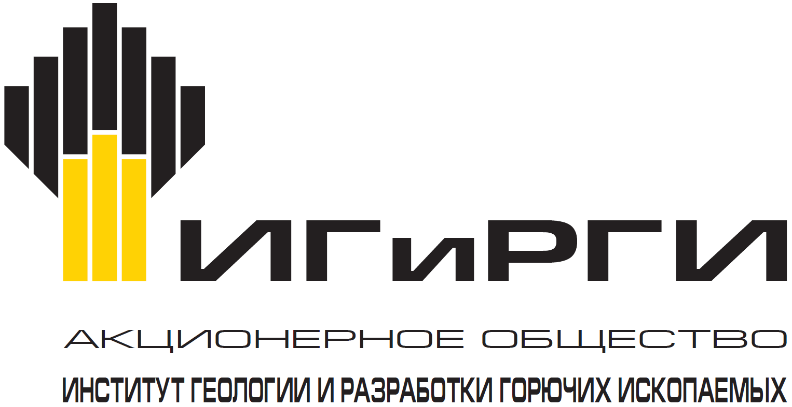
УТВЕРЖДЕНО
от «14» ноября 2018 г. № -37 - ОД
Введено в действие «14» ноября 2018 г.
|
МЕТОДИЧЕСКИЕ УКАЗАНИЯ |
РУКОВОДСТВО ПО ПРИМЕНЕНИЮ ФИРМЕННОГО СТИЛЯ АО «ИГиРГИ»
В РЕКЛАМНО-ПРЕЗЕНТАЦИОННОЙ ДЕЯТЕЛЬНОСТИ ОБЩЕСТВА
П3-01.04 М-0011 ЮЛ-290
ВЕРСИЯ 2.00
МОСКВА
2018
Методические указания устанавливают единые требования и правила использования фирменной символики Общества при изготовлении презентационных материалов, сувенирной продукции, в рекламно-презентационной деятельности, создании дизайн-макетов рекламных модулей и иных носителей визуальной коммуникации во всех случаях указания на принадлежность к Обществу.
Методические указания разработаны с учетом Методических указаний ПАО «НК «Роснефть» «Руководство по применению фирменного стиля ПАО «НК «Роснефть» в рекламно-презентационной деятельности» № П3-01.04 М-0011.
Настоящие Методические указания обязательны для исполнения всеми работниками Общества.
Требования Методических указаний становятся обязательными для исполнения после их введения в действие в установленном Обществом порядке. Распорядительные, локальные нормативные документы и иные внутренние документы не должны противоречить настоящим Методическим указаниям.
ПЕРИОД ДЕЙСТВИЯ И ПОРЯДОК ВНЕСЕНИЯ ИЗМЕНЕНИЙ
Настоящие Методические указания являются локальным нормативным документом постоянного действия.
Настоящие Методические указания утверждаются, вводятся в действие, изменяются и признаются утратившими силу на основании приказа.
Ответственность за поддержание настоящих Методических указаний в актуальном состоянии возлагается на секретаря АО «ИГиРГИ».
Контроль за исполнением требований настоящих Методических указаний возлагается на секретаря АО «ИГиРГИ».
ТЕРМИНЫ И ОПРЕДЕЛЕНИЯ КОРПОРАТИВНОГО ГЛОССАРИЯ:
ФИРМЕННЫЙ СТИЛЬ — совокупность постоянных шрифтовых и цветовых решений, художественно-графических элементов, выступающих средствами индивидуализации Компании.
ЛОГОТИП — оригинальное начертание фирменного наименования предприятия.
ФИРМЕННЫЙ БЛОК — допустимая комбинация фирменного знака и логотипа.
ФИРМЕННЫЕ ШРИФТЫ — обладающее собственным наименованием семейство шрифтов, начертания которых имеют общие гарнитурные особенности и отличительные детали рисунка знаков. Использование шрифтов одного семейства, сбалансированных по пропорциям и прочим характеристикам, позволяет обеспечить их гармоничное сосуществование.
ФИРМЕННАЯ ЦВЕТОВАЯ ГАММА — цветовое решение элементов фирменной символики.
2.1. ФИРМЕННЫЙ ЗНАК
Не допускается:
изменение пропорций товарного знака
нарушение охранного поля знака
ЛОГОТИП — оригинальное начертание фирменного наименования предприятия.
Допускается использовать только в графическом исполнении (в кривых).
Логотип воспроизводится черным цветом и всегда используется только в составе фирменного блока.
Не допускается:
изменение пропорций логотипа или букв
изменение расстояния между буквами изменение начертания букв
Фирменный блок АО «ИГиРГИ» используется в рекламных материалах или в рекламных целях, связанных с деятельностью Общества в целом. Фирменный блок является основным элементом визуальной идентификации Общества. Он состоит из графического знака и логотипа.
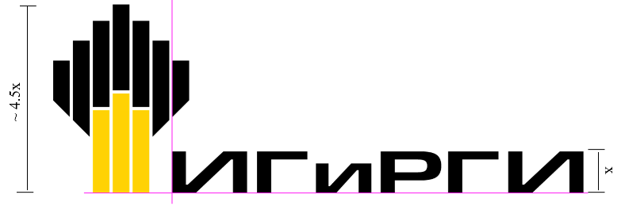
Существуют 2 варианта фирменного блока:
Центрально-ориентированный блок (рис. А). Шаблон ЛНД установлен в Приложение №1 к настоящим Методическим указаниям.
Надстрочный лево-ориентированный блок (рис. Б) Шаблон ЛНД установлен в Приложение №.2 к настоящим Методическим указаниям
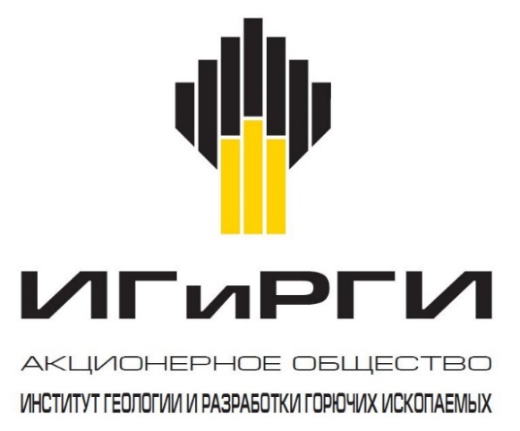
Рис. А. Центрально-ориентированный блок
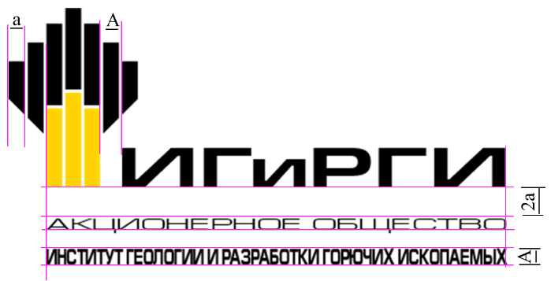
Рис. Б. Надстрочный лево-ориентированный блок
Не допускается:
одновременное попадание в поле зрения разных вариантов фирменных блоков на одном объекте
изменять расстояния между элементами фирменного блока
заменять шрифтом векторное начертание логотип
Охранное поле фирменного блока определяет минимальное расстояние от фирменного блока до других информационных/графических элементов или края макета. Необходимо всегда сохранять свободное пространство вокруг фирменного блока, обеспечивая тем самым чистоту его восприятия.
Не допускается:
попадание в охранное поле графических или иных элементы оформления модуля
минимальное значение охранного поля фирменного блока равно установленной высоте букв логотипа.
ФИРМЕННАЯ ЦВЕТОВАЯ ГАММА — цветовое решение элементов фирменной символики.
Базовая цветовая гамма, используемая при воспроизведении фирменного знака Общества.
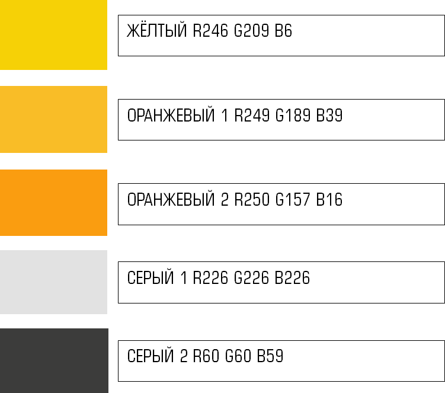
ФИРМЕННЫЕ ШРИФТЫ — обладающее собственным наименованием семейство шрифтов, начертания которых имеют общие гарнитурные особенности и отличительные детали рисунка знаков. Использование шрифтов одного семейства, сбалансированных по пропорциям и прочим характеристикам, позволяет обеспечить их гармоничное сосуществование.
Шрифты, относящиеся к шрифтовому семейству Europe, являются стилеобразующими и используются в целях создания визуальной идентификации.
Начертания шрифта Europe:
EUROPE Cond:
1234567890«»„“:;?!@#$%&*()
АBCDEFGHIJKLMNOPQRSTUVWXYZ
аbcdefghijklmnopqrstuvwxyz
АБВГДЕЁЖЗИЙКЛМНОПРСТУФХЦЧШЩЬЫЪЭЮЯ
Абвгдеёжзийклмнопрстуфхцчшщьыъэюя
EUROPE Ext:
1234567890«»„“:;?!@#$%&*()
АBCDEFGHIJKLMNOPQRSTUVWXYZ
аbcdefghijklmnopqrstuvwxyz
АБВГДЕЁЖЗИЙКЛМНОПРСТУФХЦЧШЩЬЫЪЭЮЯ
Абвгдеёжзийклмнопрстуфхцчшщьыъэюя
EUROPE Bold:
1234567890«»„“:;?!@#$%&*()
АBCDEFGHIJKLMNOPQRSTUVWXYZ
аbcdefghijklmnopqrstuvwxyz
АБВГДЕЁЖЗИЙКЛМНОПРСТУФХЦЧШЩЬЫЪЭЮЯ
Абвгдеёжзийклмнопрстуфхцчшщьыъэюя
В электронных документах используется семейство шрифтов Arial.
При написании приветствия и текста письма используется кегль – 11 pt.
Начертания шрифта Arial:
ARIAL Regular
1234567890«»„“:;?!@#$%&*()
АBCDEFGHIJKLMNOPQRSTUVWXYZ
аbcdefghijklmnopqrstuvwxyz
АБВГДЕЁЖЗИЙКЛМНОПРСТУФХЦЧШЩЬЫЪЭЮЯ
Абвгдеёжзийклмнопрстуфхцчшщьыъэюя
ARIAL Bold
1234567890«»„“:;?!@#$%&*()
АBCDEFGHIJKLMNOPQRSTUVWXYZ
аbcdefghijklmnopqrstuvwxyz
АБВГДЕЁЖЗИЙКЛМНОПРСТУФХЦЧШЩЬЫЪЭЮЯ
Абвгдеёжзийклмнопрстуфхцчшщьыъэюя
Шрифты, используемые в презентации:
Шрифт Europe используется для набора текста.
Шрифт Arial используется для числовых данных
Титульный слайд
Данная цветовая гамма используется исключительно в содержании презентации
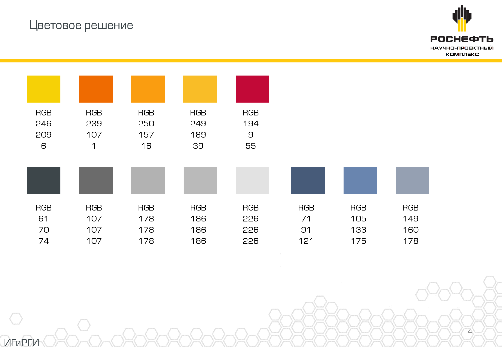
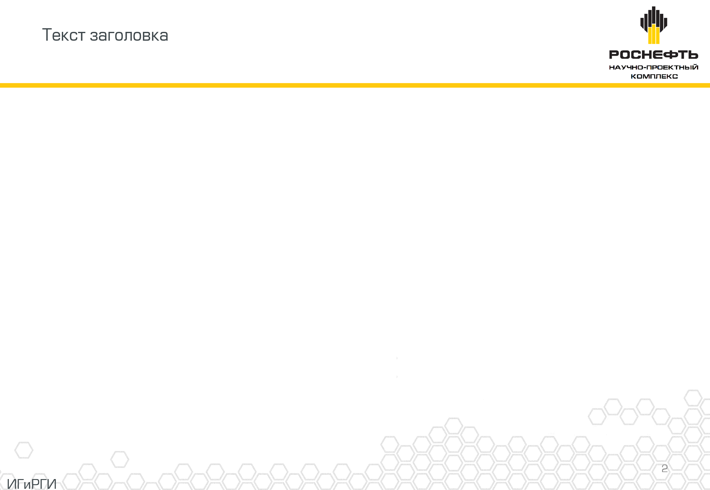
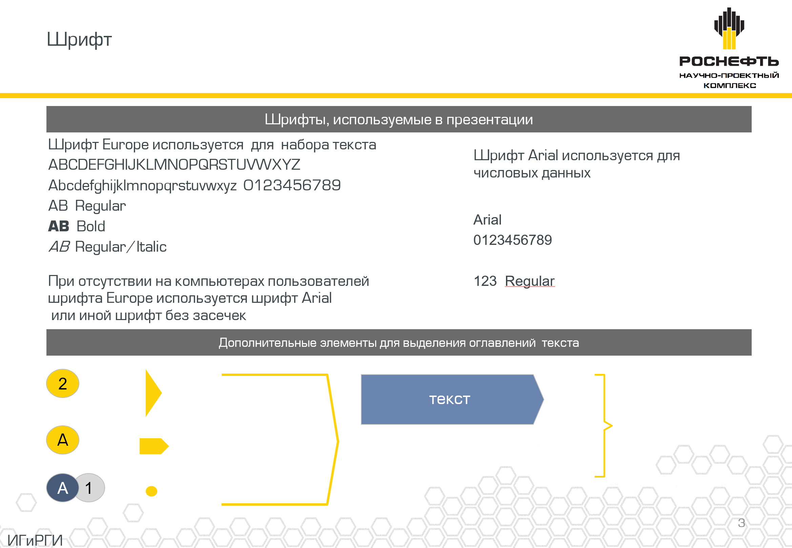
Шаблон ЛНД установлен в Приложение №3 к настоящим Методическим указаниям.
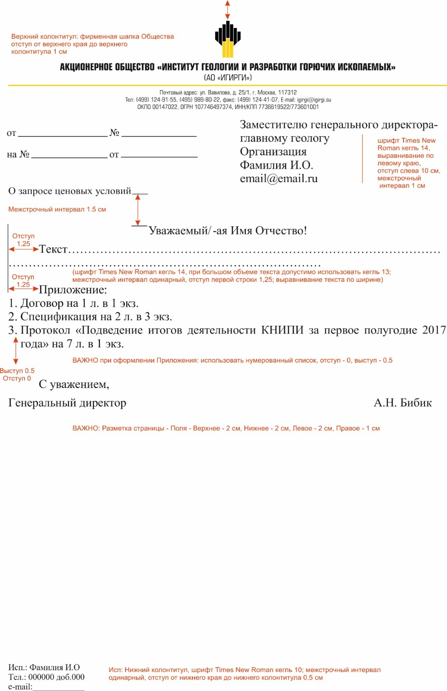
Шаблон ЛНД установлен в Приложение №4 к настоящим Методическим указаниям.
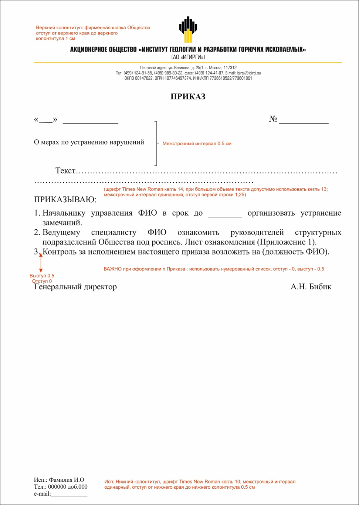
Шаблон ЛНД установлен в Приложение №5 к настоящим Методическим указаниям.
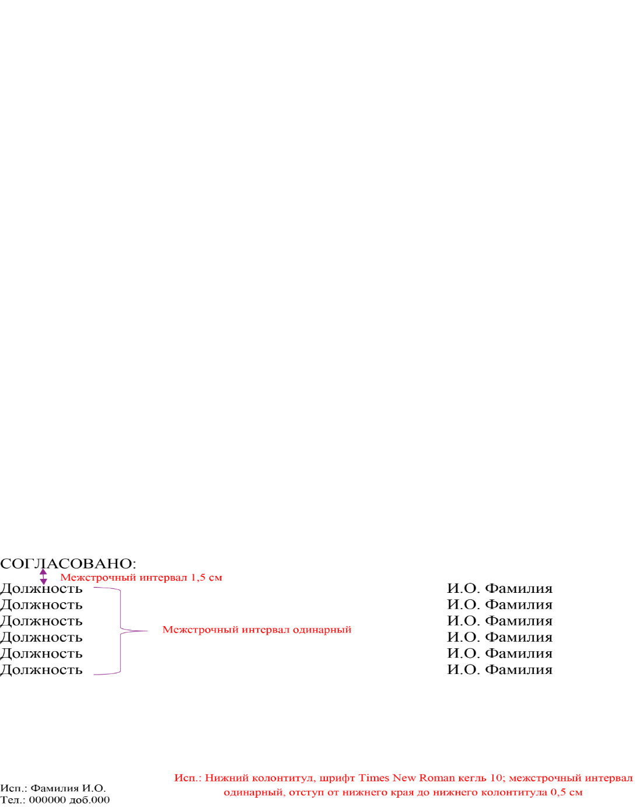
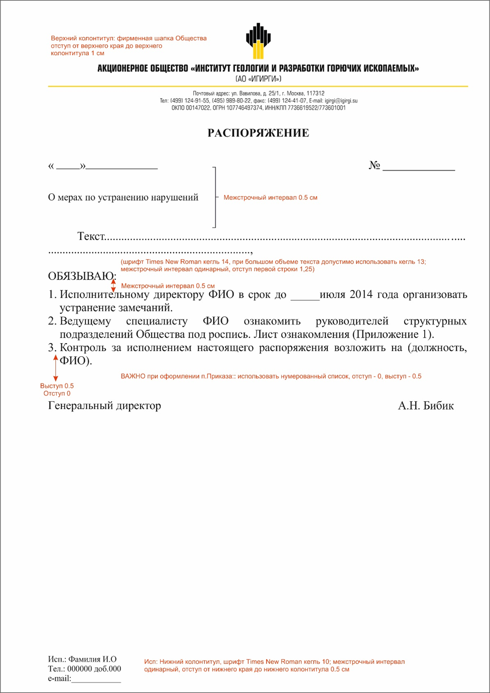
Шаблон ЛНД установлен в Приложение №6 к настоящим Методическим указаниям.
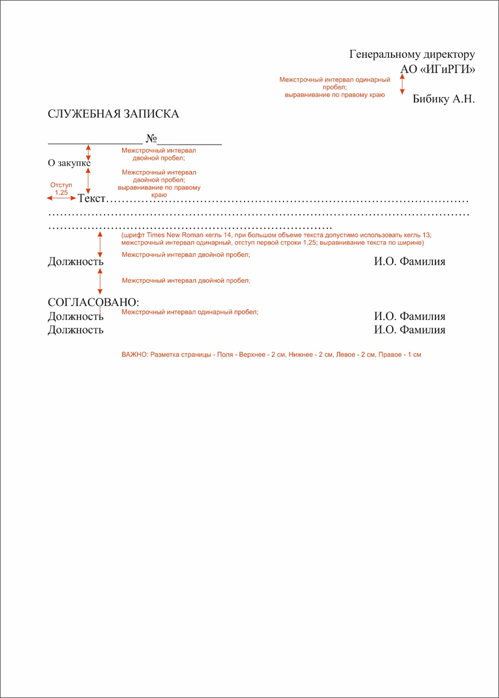
Шаблон ЛНД установлен в Приложение №7 к настоящим Методическим указаниям.
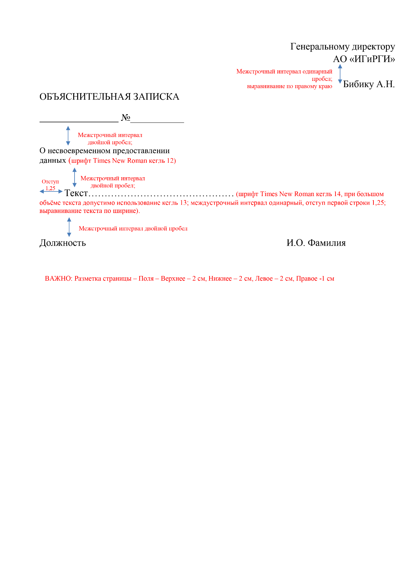
Шаблон ЛНД установлен в Приложение №8 к настоящим Методическим указаниям.
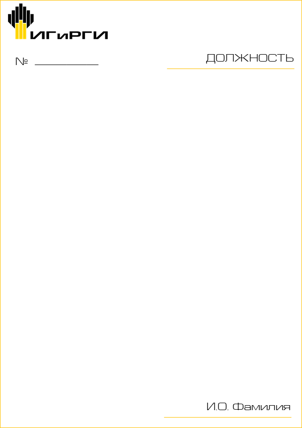
Шаблон ЛНД установлен в Приложение №9 к настоящим Методическим указаниям.
Требования к оформлению:
Рекомендуемый общий размер – 25*10 (см)
Рекомендуемый шрифт – Europe Ext (по предварительному согласованию допустимо использование шрифта Arial)
При написании ФИО используется кегль – 48pt
При написании Должности (отдела) используется кегль – 24pt
При написании Номера кабинета используется кегль – 48pt
Цвет подложки – Серый (RGB 60-60-59; CMYK 14-10-11-0)
Цвет шрифта – Чёрный (RGB 0-0-0; CMYK 0-0-0-100)
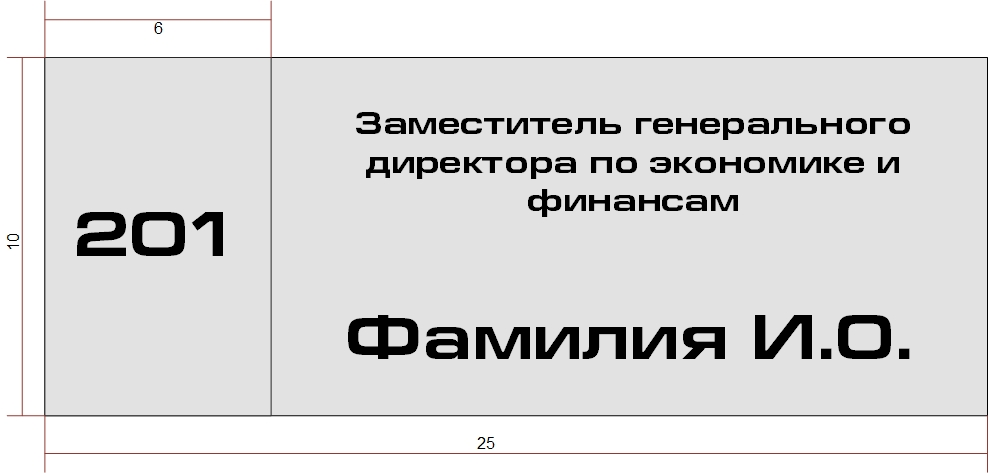
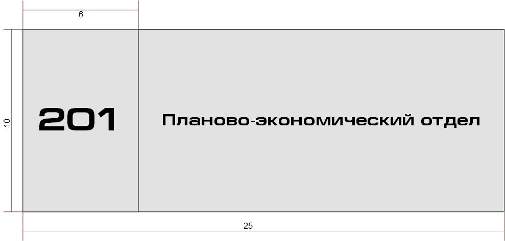
Требования к печати визитных карточек представительского класса:
Генеральный директор Общества.
Цифровая печать, бумага Touche Cover слоновая кость, плотность 301 г/м², матовая или аналогичного качества. Шелкография.
Товарный знак, логотип, дополнительный стилеобразующий элемент выполняются с термоподъемом. Печать визиток – односторонняя. Допустима двусторонняя печать на разных языках, а также добавления QR-кода.
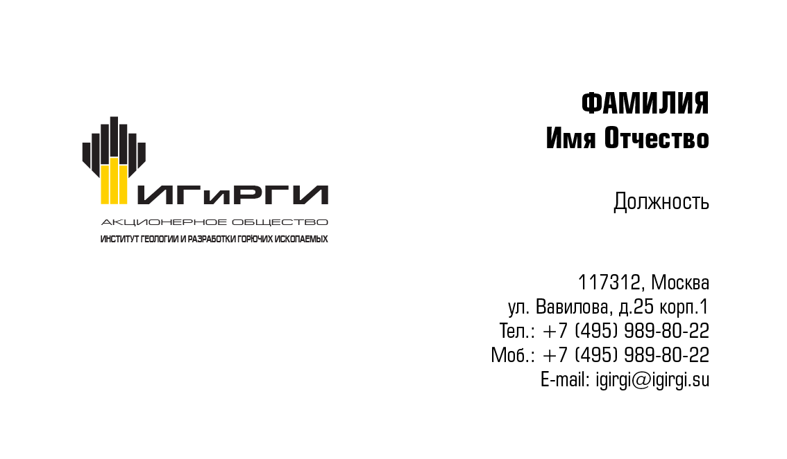
Требования к печати визитных карточек остальных работников:
Заместителей генерального директора по направлениям;
Начальников управлений структурных подразделений;
Начальников отделов структурных подразделений;
Работников Общества.
Цифровая печать, бумага Verona, слоновая кость, плотность 300 г/м², матовая или аналогичного качества.
Печать визиток – односторонняя. Допустима двусторонняя печать на разных языках, а также добавления QR-кода.
Печать CMYK:
0/0/0/100 (черный) – верхние сегменты фирменного знака, логотип, ФИО.
6/15/93/0 (жёлтый) – левая часть стилеобразующего элемента.
0/40/100/0 (оранжевый-1) – верхняя часть стилеобразующего элемента.
0/30/100/0 (оранжевый-2) – правая часть стилеобразующего элемента.
0/0/0/90 (серый) – должность и адресный блок.
Обязательные элементы:
ФИО сотрудника полностью;
Должность согласно штатному расписанию с указанием отдела;
Юридическое наименование организации;
Адрес (индекс, город, улица, дом, строение/корпус/литера);
Номер рабочего телефона с указанием добавочного номера (если имеется);
Номер мобильного телефона (по необходимости).
Требования к оформлению:
Весь текст электронного письма выполняется шрифтом: Arial;
Цвет текста: черный;
При написании ФИО используется кегль – 11 pt, полужирный;
При написании должности, отдела, используется кегль - 10 pt;
Ниже логотипа предупредительная надпись о назначении электронного сообщения и конфиденциальности, при написании используется кегль - 7 pt;
Фон электронного письма – строго белый. Цветные картинки и другие фоны не допускаются.
Разделительная линия - корпоративный цвет - жёлтый R246 G209 B6; толщина – 1/2pt.
Пример оформления:
1. Методические указания ПАО «НК «Роснефть» «Руководство по применению фирменного стиля ПАО «НК «Роснефть» в рекламно-презентационной деятельности» № П3-01.04 М-0011.
2. Федеральный закон от 13.03.2006 № 38-ФЗ «О рекламе».
{kind=link}
{kind=link}